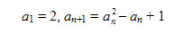
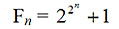
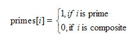
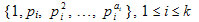

Member Count: 316,431 -
October 24, 2011
[Get Time]


 
|
In addition to being a TopCoder member, medv is a lecturer in Kiev National University's cybernetics faculty. Prime numbers and their properties were extensively studied by the ancient Greek mathematicians. Thousands of years later, we commonly use the different properties of integers that they discovered to solve problems. In this article we’ll review some definitions, well-known theorems, and number properties, and look at some problems associated with them. A prime number is a positive integer, which is divisible on 1 and itself. The other integers, greater than 1, are composite. Coprime integers are a set of integers that have no common divisor other than 1 or -1. The fundamental theorem of arithmetic: One is neither a prime nor composite number. One is not composite because it doesn’t have two distinct divisors. If one is prime, then number 6, for example, has two different representations as a product of prime numbers: 6 = 2 * 3 and 6 = 1 * 2 * 3. This would contradict the fundamental theorem of arithmetic. Euclid’s theorem: To prove this, let's consider only n prime numbers: p1, p2, …, pn. But no prime pi divides the number N = p1 * p2 * … * pn + 1, so N cannot be composite. This contradicts the fact that the set of primes is finite. Exercise 1. Sequence an is defined recursively:  Prove that ai and aj, i ¹ j are relatively prime. Hint: Prove that an+1 = a1a2…an + 1 and use Euclid’s theorem. Exercise 2. Ferma numbers Fn (n ≥ 0) are positive integers of the form  Prove that Fi and Fj, i ≠ j are relatively prime. Hint: Prove that Fn +1 = F0F1F2…Fn + 2 and use Euclid’s theorem. Dirichlet’s theorem about arithmetic progressions: Trial division: void factor(int n)
{
int i;
for(i=2;i<=(int)sqrt(n);i++)
{
while(n % i == 0)
{
printf("%d ",i);
n /= i;
}
}
if (n > 1) printf("%d",n);
printf("\n");
}
Consider a problem that asks you to find the factorization of integer g(-231 < g <231) in the form g = f1 x f2 x … x fn or g = -1 x f1 x f2 x … x fn where fi is a prime greater than 1 and fi ≤ fj for i < j. For example, for g = -192 the answer is -192 = -1 x 2 x 2 x 2 x 2 x 2 x 2 x 3. To solve the problem, it is enough to use trial division as shown in function factor. Sieve of Eratosthenes: The procedure of finding prime numbers gen_primes will use an array primes[MAX] as a list of integers. The elements of this array will be filled so that  At the beginning we mark all numbers as prime. Then for each prime number i (i ≥ 2), not greater than √MAX, we mark all numbers i*i, i*(i + 1), … as composite. void gen_primes()
{
int i,j;
for(i=0;i<MAX;i++) primes[i] = 1;
for(i=2;i<=(int)sqrt(MAX);i++)
if (primes[i])
for(j=i;j*i<MAX;j++) primes[i*j] = 0;
}
For example, if MAX = 16, then after calling gen_primes, the array ‘primes’ will contain next values:
Goldbach's Conjecture: For example, for n = 10 we have two such pairs: 10 = 5 + 5 and 10 = 3 + 7. To solve this,as n ≤ 215 = 32768, we’ll fill an array primes[32768] using function gen_primes. We are interested in primes, not greater than 32768. The function FindSol(n) finds the number of different pairs (p1, p2), for which n = p1 + p2. As p1 ≤ p2, we have p1 ≤ n/2. So to solve the problem we need to find the number of pairs (i, n – i), such that i and n – i are prime numbers and 2 ≤ i ≤ n/2. int FindSol(int n)
{
int i,res=0;
for(i=2;i<=n/2;i++)
if (primes[i] && primes[n-i]) res++;
return res;
}
Euler’s totient function φ (n) ={a Î N: 1 ≤ a ≤ n, gcd(a, n) = 1} This function has the following properties:
φ (n) = n * (1 – 1/p 1) * (1 – 1/p 2) * ... * (1 – 1/p k) The function fi(n) finds the value of φ(n): int fi(int n)
{
int result = n;
for(int i=2;i*i <= n;i++)
{
if (n % i == 0) result -= result / i;
while (n % i == 0) n /= i;
}
if (n > 1) result -= result / n;
return result;
}
For example, to find φ(616) we need to factorize the argument: 616 = 23 * 7 * 11. Then, using the formula, we’ll get: φ(616) = 616 * (1 – 1/2) * (1 – 1/7) * (1 – 1/11) = 616 * 1/2 * 6/7 * 10/11 = 240. Say you've got a problem that, for a given integer n (0 < n ≤ 109), asks you to find the number of positive integers less than n and relatively prime to n. For example, for n = 12 we have 4 such numbers: 1, 5, 7 and 11. The solution: The number of positive integers less than n and relatively prime to n equals to φ(n). In this problem, then, we need do nothing more than to evaluate Euler’s totient function. Or consider a scenario where you are asked to calculate a function Answer(x, y), with x and y both integers in the range [1, n], 1 ≤ n ≤ 50000. If you know Answer(x, y), then you can easily derive Answer(k*x, k*y) for any integer k. In this situation you want to know how many values of Answer(x, y) you need to precalculate. The function Answer is not symmetric. For example, if n = 4, you need to precalculate 11 values: Answer(1, 1), Answer(1, 2), Answer(2, 1), Answer(1, 3), Answer(2, 3), Answer(3, 2), Answer(3, 1), Answer(1, 4), Answer(3, 4), Answer(4, 3) and Answer(4, 1). The solution here is to let res(i) be the minimum number of Answer(x, y) to precalculate, where x, y Î{1, …, i}. It is obvious that res(1) = 1, because if n = 1, it is enough to know Answer(1, 1). Let we know res(i). So for n = i + 1 we need to find Answer(1, i + 1), Answer(2, i + 1), … , Answer(i + 1, i + 1), Answer(i + 1, 1), Answer(i + 1, 2), … , Answer(i + 1, i). The values Answer(j, i + 1) and Answer(i + 1, j), j Î{1, …, i + 1}, can be found from known values if GCD(j, i + 1) > 1, i.e. if the numbers j and i + 1 are not common primes. So we must know all the values Answer(j, i + 1) and Answer(i + 1, j) for which j and i + 1 are coprime. The number of such values equals to 2 * φ (i + 1), where φ is an Euler’s totient function. So we have a recursion to solve a problem: res(1) = 1, Euler’s totient theorem: Fermat’s little theorem: a p ≡ a (mod p) This theorem can also be stated as: If p is a prime number and a is coprime to p, then a p -1 ≡ 1 (mod p) Fermat’s little theorem is a special case of Euler’s totient theorem when n is prime. The number of divisors: (a1 + 1) * (a2 + 1) * … * (ak + 1) For a proof, let A i be the set of divisors . Any divisor of number n can be represented as a product x1 * x2 * … * x k , where xi Î Ai. As |Ai| = ai + 1, we have (a1 + 1) * (a2 + 1) * … * (ak + 1) possibilities to get different products x1 * x2 * … * xk. For example, to find the number of divisors for 36, we need to factorize it first: 36 = 2² * 3². Using the formula above, we’ll get the divisors amount for 36. It equals to (2 + 1) * (2 + 1) = 3 * 3 = 9. There are 9 divisors for 36: 1, 2, 3, 4, 6, 9, 12, 18 and 36. Here's another problem to think about: For a given positive integer n (0 < n < 231) we need to find the number of such m that 1 ≤ m ≤ n, GCD(m, n) ≠ 1 and GCD(m, n) ≠ m. For example, for n = 6 we have only one such number m = 4. The solution is to subtract from n the amount of numbers, coprime with it (its amount equals to φ(n)) and the amount of its divisors. But the number 1 simultaneously is coprime with n and is a divisor of n. So to obtain the difference we must add 1. If n = is a factorization of n, the number n has (a1 + 1) * (a2 + 1) * … * (ak + 1) divisors. So the answer to the problem for a given n equals to n – φ(n) – (a1 + 1) * (a2 + 1) * … * (ak + 1) + 1 Practice Room:
|
|
|
Home |
About TopCoder |
Press Room |
Contact Us |
Careers |
Privacy |
Terms
Competitions | Cockpit |
| Copyright TopCoder, Inc. 2001-2011 |